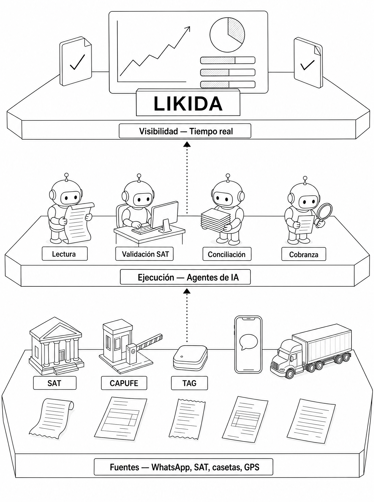

Captura manual de tickets
El operador junta los comprobantes en la guantera y los entrega el viernes — o el otro viernes. Teclear cada uno cuesta minutos por comprobante, en el renglón más pesado de todo el ciclo.
Valida comprobantes contra el SAT, aplica tu política de gastos y cuadra la liquidación por viaje — desde el WhatsApp que tu operador ya usa. Sin apps nuevas, sin cambiar de ERP.
En la demo lo ves corriendo con un caso tuyo: trae 10 fotos de un viaje cerrado.
El operador junta los comprobantes en la guantera y los entrega el viernes — o el otro viernes. Teclear cada uno cuesta minutos por comprobante, en el renglón más pesado de todo el ciclo.
Cruzar el estado de cuenta del TAG contra los viajes reales se hace a mano, cuando da tiempo. Sin esa bitácora, el estímulo del 50% de peaje queda indefendible en una revisión.
Cada gasolinera pone su propio corte para timbrar — algunas exigen 72 horas. El ticket que se vence no es una molestia: es un gasto que pierde su deducibilidad completa.
Permisos, verificaciones, pólizas, licencias de operador: no existe una consulta que las vigile todas juntas. Cuando alguien se entera, ya truncó la operación.
Likida se conecta a lo que ya usas — no reemplaza nada. El dato entra por donde ya vive, los agentes lo trabajan, y tú lo ves cuadrado en tiempo real.
El WhatsApp del operador, los CFDI del SAT, los portales de casetas y TAG, el GPS de tu flota y tu ERP.
Conductores, cobranza de comprobantes, liquidación, facturas y conciliación de peajes — de punta a punta.
Cola de viajes por cerrar, IVA acreditable, litros elegibles, discrepancias de peaje marcadas y alertas de vigencias.

El operador manda las fotos por WhatsApp al terminar el viaje.
HechoExtrae monto, RFC y folio fiscal de cada ticket y su CFDI.
HechoVigente, receptor correcto, emisor fuera de la lista 69-B.
En cursoCompara lo comprobado contra el anticipo y las reglas de gasto.
HechoPDF con desglose y fundamento fiscal, listo para revisión.
HechoEl archivo que SAP Business One o CONTPAQi ya sabe importar.
PendienteAl terminar el viaje, fotografía sus tickets desde el WhatsApp que ya tiene. Su entrenamiento completo: "manda las fotos y escribe listo".
Cada comprobante se lee, se decodifica y su CFDI se valida directo contra el SAT: vigente, receptor correcto, emisor fuera del 69-B.
Lo comprobado se compara contra el anticipo y tu política de gastos. Los totales los calcula un motor determinístico — la IA nunca inventa una cifra.
PDF con el desglose y el fundamento fiscal, listo para el operador y para el contador — y el archivo que tu ERP ya sabe importar.
El jefe de tráfico asigna el viaje por WhatsApp; el sistema avisa al operador y persigue su aceptación.
Sella los hitos "ya llegué / descargando / de regreso" conforme suceden, sin que nadie llame a preguntar.
Si el operador no acepta su viaje a tiempo, el jefe recibe la alerta — no antes, y nunca por encima de su criterio.
Persigue el ticket que falta para cerrar el viaje, con una cola honesta: dice a quién le va a escribir y por qué.
El operador manda las fotos y escribe "listo"; el motor cuadra contra el anticipo y tu política de gastos.
Lleva el calendario de facturación de cada ticket y avisa cuál vence, en qué portal, con la liga directa.
Cruza el estado de cuenta del TAG contra los cruces reales y arma la bitácora que exige el estímulo del 50%.
El archivo que tu SAP Business One o CONTPAQi ya sabe importar, sin retecleo — tu ERP no se toca.
El contralor recibe lo fiscal, tráfico las escalaciones, el contador su bandeja — nadie recibe ruido ajeno.
IVA acreditable, 50% de peaje e IEPS de diésel en litros — cada uno con su artículo citado en pantalla.
Describimos controles reales en vez de colgar siglas.
La base niega el acceso por default y cada consulta re-verifica sesión, rol y flota en el servidor — nunca en la pantalla.
ERP, GPS o monederos: se guardan cifradas con la llave fuera de la base. Nunca se muestran de vuelta.
Cada CFDI se valida vigente, receptor correcto y emisor fuera del 69-B. El que no pasa, no llega callado a tu contabilidad.
Los totales los calcula un motor determinístico. Si la IA y el motor no coinciden, gana el motor — o no se manda nada.
Trae 10 fotos de un viaje cerrado y en la demo lo ves correr con tus números — no con los nuestros. 30 minutos por Google Meet, con disponibilidad en tiempo real.
Nombre, tamaño y contacto — nada más.
El calendario de abajo es el real: lo que ves disponible, está disponible.
La demo corre con un viaje tuyo, cuadrado en vivo.
Agenda 30 minutos y ve un viaje tuyo cuadrado en vivo — con tus números, no con los nuestros.
 Contáctanos
Contáctanos